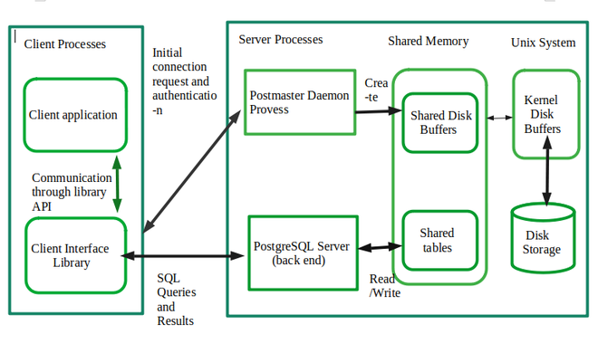

A. Architectural Fundamentals
PostgreSQL uses user and client model. The whole model can be explained with the graph below 
Client Process:
- Client application: The interface that allows user control / send database command. I.e. Pgadmin, windows shell
- Client Interface Library: Transfer the commands from application to SQL commands
Sever Prcess:
Internet connection via TCP/IP
- PostgreSQL can handel multiple connections from clients which start ("forks") in server. The details of "folk" can be explained by C language